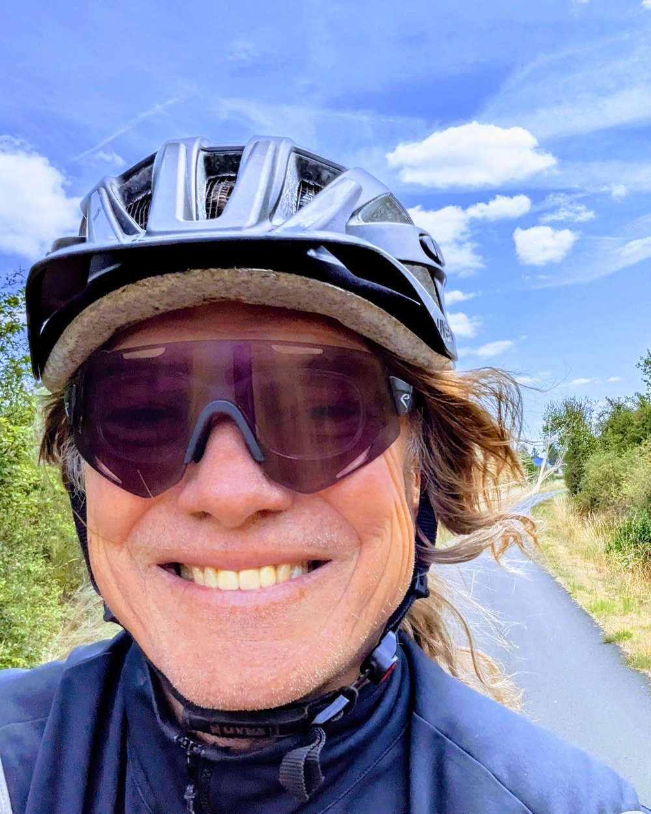

Büro für Radverkehrsplanung · Saarland
Bürgermeldungen einsammeln, mit Ihrem bestehenden Konzept abgleichen, priorisieren – und die ersten Maßnahmen so weit planen, dass Sie ausschreiben können. Noch kein Konzept? Dann erstelle ich es.
Erstberatung anfragen So lief es in WadgassenAus einer echten Aktion: Meldungen verdichten sich zu Schwerpunkten – daraus wird die Reihenfolge der Maßnahmen.
Je nachdem, wo Ihre Kommune gerade steht – bei null, mit einem Konzept in der Schublade oder mit einer Stelle, die seit Jahren hakt.
Eine eigene Meldekarte für Ihr Gemeindegebiet. Anonym, ohne App-Installation, die Meldungen liegen auf einem Server in Frankfurt. Am Ende steht kein Datenhaufen, sondern ein ausgewerteter Bericht für Ihren Rat.
Radwegemelder ansehenIhr bestehendes Radverkehrskonzept gegen die Wirklichkeit: Was geht kurzfristig, was braucht Vorlauf, was ist inzwischen überholt? Sie bekommen eine belastbare Reihenfolge statt einer Wunschliste.
Konzept-CheckOrtstermin, Planunterlage, Entwurf der verkehrsrechtlichen Anordnung, Kostenschätzung. Bei Markierung und Beschilderung bis zum Leistungsverzeichnis, mit dem Sie ausschreiben können.
Umfang und GrenzenPlanungsthemen
Vom Gesamtnetz bis zur einzelnen Engstelle, mit fertigen Unterlagen für Verwaltung und Rat.
Alltagsnetz für Ihre Kommune, Lückenanalyse, Maßnahmenliste mit Prioritäten. Auf Wunsch mit Konzept für die Wegweisung.
Ich prüfe die Beschilderung auf Ihren Radwegen nach StVO und VwV-StVO 2025. Wo die Pflicht nicht mehr zulässig ist, bereite ich die Aufhebung vor.
Eignungsprüfung, Entwurf der Anordnung, Plan für Beschilderung und Markierung.
Welche Einbahnstraßen sich für den Radverkehr in Gegenrichtung freigeben lassen und wie sie beschildert werden.
Von der Bestandsaufnahme bis zum Leistungsverzeichnis.
Bedarf, Standorte und Aufstellplanung nach DIN 79008.
Ich fahre Ihr Netz ab und dokumentiere jede Stelle mit Fotos. Am Ende haben Sie ein Maßnahmenblatt je Stelle.
Zuordnung zur Landesförderung, Unterstützung beim Antrag, fachliche Stellungnahme zu Straßen- und Bebauungsplänen.
Umsetzung
Ein Radverkehrskonzept im Schrank verbessert keinen Meter Radweg. Ich arbeite an der Stelle, an der es meistens hakt – zwischen dem, was geplant wurde, und dem, was tatsächlich gebaut wird.
Wo ich aufhöre – und warum Sie davon profitieren
Bei baulichen Maßnahmen – neuer Radweg, Knotenpunktumbau, Querungsanlage – plane ich bis zur Entscheidungsreife und übergebe an Ihr Tiefbauamt. Für Statik und Entwässerung sollen Sie jemanden haben, der das täglich macht.
Ihr Vorteil: Das beauftragte Büro bekommt von mir eine durchdachte Vorlage statt einer vagen Idee – und braucht entsprechend weniger Stunden.
Vergabeverfahren und Bauüberwachung übernehme ich nicht.
Bürgerbeteiligung
Ihre Bürgerinnen und Bürger melden Probleme, Wünsche und gute Stellen direkt vom Smartphone – anonym, ohne Installation, ohne Registrierung. Sie bekommen die Auswertung: Karten, Schwerpunkte, Bericht für den Gemeinderat.
Zum Radwegemelder Demo öffnenWas die Kommune davon hat
Eine eigene Aktionskarte mit einem Link für Flyer, Amtsblatt und Website. Die Daten gehören Ihnen, Export als GeoJSON und CSV.
Die fachliche Auswertung und die Einbindung in Ihre Planung sind Teil meiner Beratungsleistung – nicht Ihre Hausaufgabe.
Werkzeuge
Wer entscheidet hier eigentlich? Welche Förderung passt? Welches Vergabeverfahren gilt? Sechs kleine Entscheidungshilfen im Browser, aus der eigenen Planungsarbeit entstanden – jede endet mit einem Vermerk, den Sie in die Akte legen können.
Werkzeuge ansehenOhne Anmeldung nutzbar
Bügelplaner – wie viele Fahrräder passen vor Rathaus, Schule oder Bahnhof? Nach DIN 79008, mit Aufstellskizze.
Fördermittel-Finder – Quote, Mindestinvestition und Frist nach der Landesrichtlinie.
Referenz · Gemeinde Wadgassen
Erste Kommune im Saarland mit dem Radwegemelder, 19.03. bis 20.06.2026. Am Ende stand ein Bericht mit Karten, räumlichen Schwerpunkten und einer Reihenfolge für den Gemeinderat.
Die Karte ist weiterhin online
Nach Aktionsende bleibt sie für die Bürger sichtbar – das schafft mehr Vertrauen als jede Pressemitteilung.

Armin Jung
Radverkehrsplaner EIPOS
Wer hier plant
Bei 2Rat arbeiten Sie mit einer Person – kein wechselndes Projektteam, keine Weiterreichung. Sie rufen an und erreichen den, der die Planung gemacht hat.
Ich plane Markierung, Beschilderung, Schutzstreifen und Fahrradstraßen bis zum Leistungsverzeichnis. Bei baulichen Maßnahmen plane ich bis zur Entscheidungsreife und übergebe dann – mit einer Vorlage, die dem nächsten Büro Arbeit abnimmt.
Und ich fahre die Strecken, über die ich schreibe, selbst mit dem Rad ab. Vieles sieht am Schreibtisch anders aus als an der Engstelle.
Kontakt
Eine erste Einschätzung kostet nichts. Schildern Sie mir kurz die Situation – ich sage Ihnen, was sich machen lässt und was nicht. Wenn ich nicht der Richtige bin, sage ich Ihnen auch das.
Anfrage senden